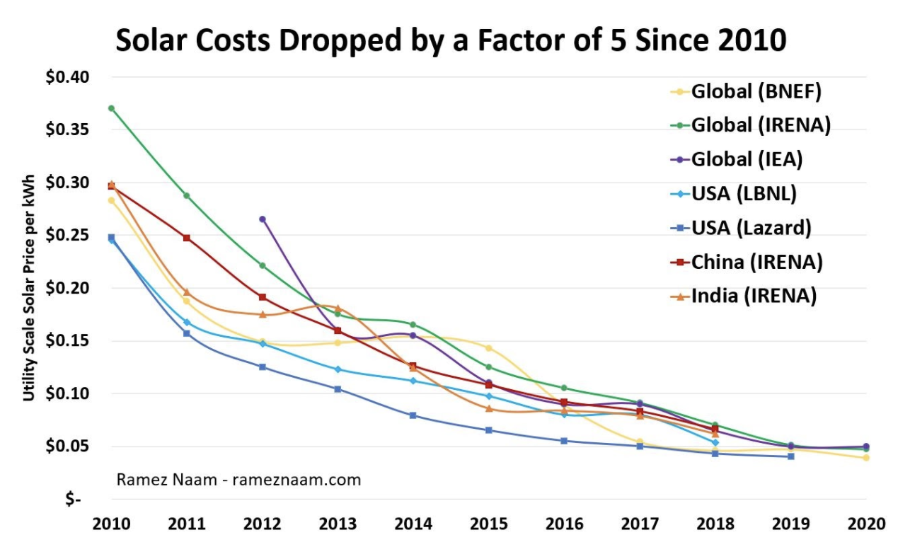
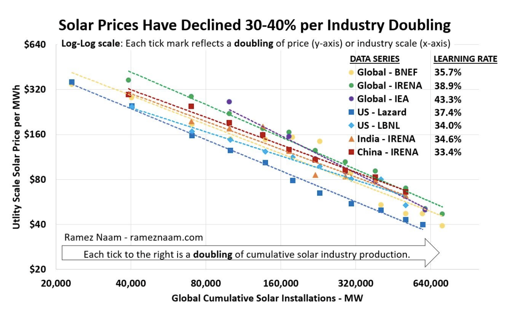
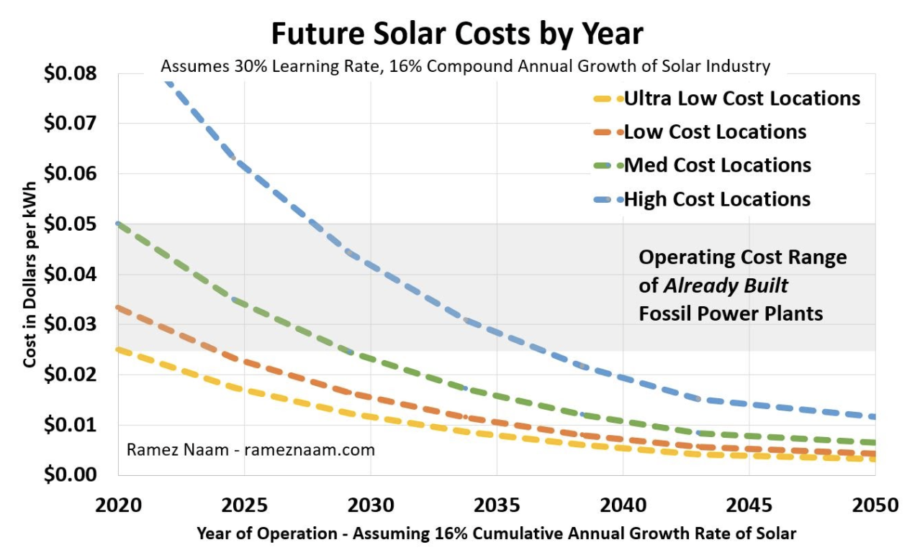

Solar power costs continue to plunge
Since 1975, the cost of solar panels (per watt of power they produce) has dropped by a factor of roughly 500, an incredible 99.8 percent cost reduction. Innovations in other areas such as inverters, the tracking systems that keep solar panels pointed at the sun, and systems for deploying solar panels, have led to a remarkable plunge in the cost of solar electricity. Between 2010-2020, the cost of electricity from solar power plants dropped by an average of a factor of 5 around the world.
These cost reductions are best quantified in terms of “learning rates'' or what is sometimes known as Wright’s Law. Wright’s Law states that every cumulative doubling of mass-produced technologies will lead to a consistent decline in cost. As a technology industry scales up, that scaling leads to innovation in the technology, in how it’s manufactured, and in how it’s deployed. That innovation brings down costs. Different technologies have different rates of cost decline as they scale. Our Chief Futurist Ramez Naam documents a cost decline 30-40 percent for solar electricity for every cumulative doubling of scale.
These cost trends appear likely to continue. Throughout the 2020s, and perhaps into the 2030s and 2040s, solar costs will decline as the industry scales, improves the core efficiency of solar modules, improves the efficiency of the manufacturing process, and develops new methods to deploy solar power plants with less labor and lower overall system costs.
You can read more about learning rates, Wright’s Law, and how solar costs have plunged faster than almost any forecaster has expected with Solar’s Future is Insanely Cheap.